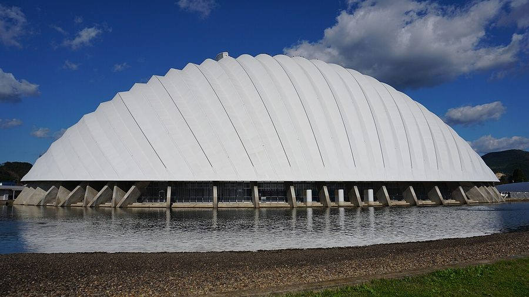
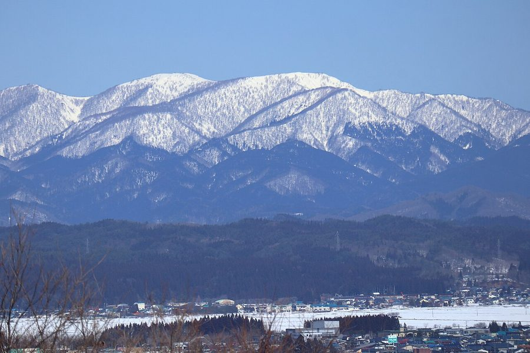
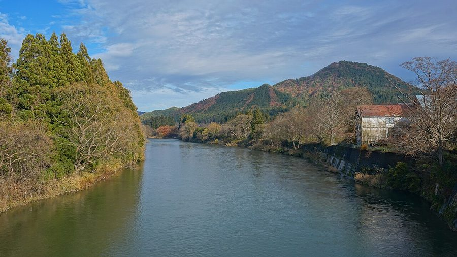
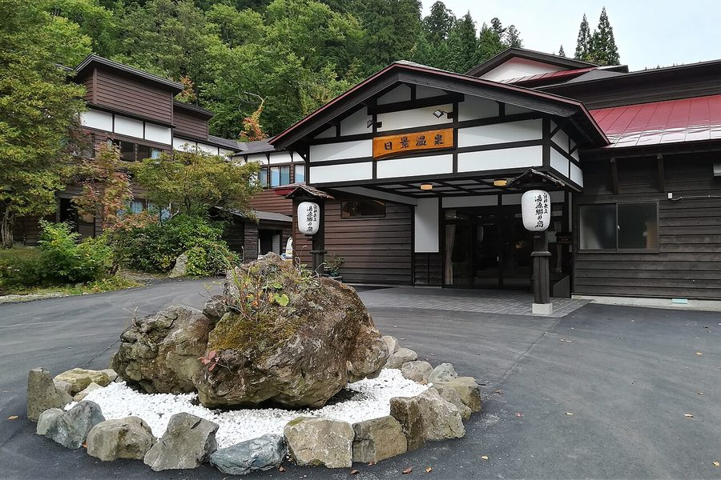

秋田県大館市の日帰り温泉・銭湯・サウナ（16件）
寄り道スポット検索アプリ「ヨッテコ」の収録データから、秋田県大館市の日帰り温泉・銭湯・サウナを営業時間・料金つきで一覧にしました（2026年8月時点）。
最も安いのは別所温泉（100円）。最も遅くまで入れるのは大館 ぽかぽか温泉ホテル（23:30まで）。朝風呂なら大館 ぽかぽか温泉ホテル（5:30開店）。
秋田県大館市はどんなまち？
数字で見る🔍秋田県大館市
まちの横顔




- 地形と気候: 市域の大部分は山間部で、大館市は四方を山に囲まれた盆地です。北部には田代岳を主峰とする1000メートル級の山々が連なり、南部には比内連峰が屏風のように聳えます。秋田三大河川の一つ米代川が市の中央部を東から西へ貫き、犀川や長木川などの支流が合流します。気温の年較差・日較差が大きい大陸性気候で、年平均気温は10.2℃、市全域が豪雪地帯に指定されています。
- 自然と景勝: 旧市街地は長木川と米代川に挟まれた大館盆地の中心にあり、大館城址が残ります。芝谷地湿原植物群落や長走風穴高山植物群落は国の天然記念物に指定され、矢立峠には天然秋田杉が茂ります。田代岳県立自然公園には五色の滝などがあり、長木川ではニホンザリガニの生息が確認されています。同種は環境省レッドブックで絶滅危惧II類に指定されています。
寄り道充実度（全国偏差値）
偏差値・順位は、ヨッテコ収録データ（2026年8月時点・26,033件）を市区町村別に集計した施設数の全国分布（1,728市区町村）から毎回算出しています。カードを押すとカテゴリ別の分析に切り替わります。
日帰り温泉から見た秋田県大館市
天然温泉を使う店は94%、全国水準（67%）の1.4倍。——何軒あるかより、どんな湯かで語れるまち。
- 露天風呂を備える店は31%。全国水準の46%より少なめです。外の眺めより、湯そのものに向き合う造りが多いということになります。
- 天然温泉を使う店は94%、全国水準（67%）の1.4倍。大館城址が残り、芝谷地湿原植物群落など国指定天然記念物の景勝地を抱える市。お湯があること自体が出発点になっているまちです。
- 44%——サウナの併設率は、全国の52%に届きません。主役はあくまで湯船、という構成でしょうか。
- 50%の店が21時を過ぎても開いています。全国水準は40%です。一日の終わりに一風呂、という選択肢が残っています。
- 入浴料（判明14件）の中央値は400円。全国（650円）より38%安めです。400円を目安にしておけば、多くの店で足ります。
出典: 施設データ=ヨッテコ収録データ（26,033件・2026年8月時点）。偏差値・全国順位・全国水準は全1,728市区町村の分布から毎回算出。 / 人口=総務省「住民基本台帳に基づく人口、人口動態及び世帯数」（2026年1月1日現在） / 面積=国土地理院「全国都道府県市区町村別面積調」（2026年4月1日時点） / 森林率=農林水産省「2025年農林業センサス（農山村地域調査）」市区町村別林野率（2025年、林野率（林野面積÷総土地面積）） / 年平均気温=気象庁「平年値（1991-2020年）」。市区町村の代表点（国土交通省「大字・町丁目レベル位置参照情報」）から最も近い観測点の値 / まちの解説=日本語版Wikipedia「大館市」（https://ja.wikipedia.org/wiki/大館市、2026年8月21日取得、CC BY-SA 4.0） / 写真=Wikimedia Commons（各キャプションに作者・ライセンスを記載）
曜日別の営業施設数
| 月 | 火 | 水 | 木 | 金 | 土 | 日 |
|---|---|---|---|---|---|---|
| 14 | 15 | 16 | 16 | 16 | 15 | 16 |
月曜日が最も休みが多く（各2件が定休）、年中無休は12件です。※営業時間データのある16件で集計
入浴料金の分布（大人）
| 500円以下 | 13件 | |
| 501〜800円 | 1件 |
料金が確認できた14件で集計。
施設一覧
| 施設 | 営業時間 | 料金（大人） |
|---|---|---|
| たしろ温泉ユップラ 天然温泉露天風呂サウナ 多彩なお風呂でココロもカラダも癒やされる。露天風呂をはじめ、温泉浴槽、ジェットバス、泡風呂などの多彩なお風呂と高温サウナ… | 06:00〜22:00 | 450円 |
| ひない温泉 比内のゆ 天然温泉サウナ 館内全てバリアフリーで誰でも安心して気軽に温泉を楽しめる。大浴場は浴槽温度が41度、42度、43度と3種類に分かれている… | 06:00〜22:00 | 460円 |
| ふるさわ温泉 光葉館 天然温泉 | 06:30〜21:00（火休） | 400円 |
| 別所温泉 天然温泉 | 06:00〜21:00 | 100円 |
| 喜久乃湯 | 14:00〜20:30 ※曜日により異なる | 400円 |
| 大滝温泉 湯夢湯夢の湯 天然温泉露天風呂 千六百年前に遡る県内最古の歴史を持つ温泉。佐竹藩主も湯治場として利用したという由緒ある温泉。 | 06:00〜22:00（土休） | 400円 |
| 大葛温泉町民浴場 天然温泉 | 06:00〜20:00 | 200円 |
| 大館 ぽかぽか温泉ホテル 天然温泉サウナ 大館 ぽかぽか温泉ホテル。5:30～23:30営業。ナトリウム・カルシウム・硫酸塩塩化物泉。 | 05:30〜23:30 | 500円 |
| 大館 雪沢温泉 清風荘 天然温泉露天風呂サウナ | 05:30〜22:00 | 500円 |
| 大館東台温泉 東の湯 天然温泉 | 06:00〜22:00 | 400円 |
| 大館矢立ハイツ 天然温泉露天風呂サウナ 天然源泉掛け流しの完全天然温泉 | 07:00〜21:00 | 750円 |
| 沼館温泉会館 ぬまだてのゆっこ 天然温泉サウナ 沼館温泉会館 ぬまだてのゆっこ。6:00～22:00営業（年に3回定休）。ナトリウム・カルシウム-硫酸塩・酸化物泉。 | 06:00〜22:00 | — |
| 白神矢立 湯源郷の宿 日景温泉 天然温泉露天風呂 秋田・青森県境の白神山地北東に位置する一軒宿。源泉3ヶ所から湧出する「三日一廻りの霊泉」として知られる秘湯。 | 11:00〜15:00 | — |
| 秋田県北部 老人福祉総合エリア 天然温泉サウナ | 09:00〜20:00（月休） | 340円 |
| 軽井沢温泉 天然温泉 | 06:00〜20:00 | 200円 |
| 雪沢温泉 大雪 天然温泉 古い建物で、ヒバの浴槽でゆっくりと温泉が楽しめる宿泊施設。源泉掛け流し。 | 06:00〜22:00 | 300円 |